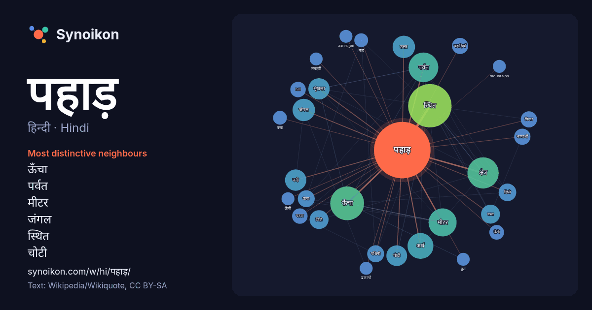

हिन्दी · Hindi · word of the day list
पहाड़
“mountain” · The words found around it in 784 instances from Hindi Wikipedia, Wikiquote.

Most distinctive neighbours
- ऊँचा 41×
- पर्वत 26×
- मीटर 19×
- जंगल 18×
- स्थित 17×
- चोटी 17×
- शृंखला 17×
- ज़िले 12×
- ऊंचा 12×
- पहाड़ियाँ 12×
- अर्थ 11×
- hill 11×
- किला 10×
- पठार 9.8×
- उत्तर 9.1×
- ऊँचे 9.1×
- नदी 8.4×
- mountains 8.0×
- ढलानों 7.9×
- तलहटी 7.7×
× = how many times more often than in general Hindi Wikipedia text.
Most frequent neighbours
- स्थित 79
- ऊँचा 48
- क्षेत्र 41
- पर्वत 37
- मीटर 33
- अर्थ 28
- उत्तर 21
- जंगल 21
- भाग 21
- भारत 20
- नदी 19
- शृंखला 19
- चोटी 18
- नाम 18
- बीच 17
- जिले 15
- मध्य 15
- ज़िले 13
- पास 13
- भाषा 13
In context
- पर्वत या पहाड़ पृथ्वी की भू-सतह पर प्राकृतिक रूप से ऊँचा उठा हुआ हिस्सा होता है, जो ज़्यादातर आकस्मिक तरीके से उभरा हुआ होता है और पहाड़ी से बड़ा होता Wikipedia snippets · पर्वत
- कश्मीर के पूर्व से लेकर नेपाल तक पहाड़ी भाषाएँ बोली जाती हैं। ग्रियर्सन ने आधुनिक भारतीय आर्यभाषाओं का वर्गीकरण करते समय पहाड़ी भाषाओं का एक स्वतंत्र समुदाय Wikipedia snippets · पहाड़ी भाषाएँ
- पहाड़ है। यह दक्षिण भारत में पांच मुख्य शैव पवित्र स्थानों में से एक है। इसे अरुणगिरि, अरुणई, सोनगिरि और सोणाचलम के नामों से भी जाना जाता है। पहाड़ के Wikipedia snippets · अन्नामलई पहाड़
- सरवात पहाड़ (अंग्रेजी: Sarawat mountains) या सरात पहाड़ (Sarat mountains), जिन्हें अरबी में जबाल अल-सरवात (ur) कहते हैं, अरबी प्रायद्वीप के पश्चिमी तट Wikipedia snippets · सरवात पहाड़ियाँ
- पांचेत पहाड़ (Panchet Hill) या पंचकोट पहाड़ (Panchakot Pahar) भारत के पश्चिम बंगाल राज्य के पुरुलिया ज़िले के पूर्वोत्तर भाग में छोटा नागपुर पठार का एक Wikipedia snippets · पांचेत पहाड़
- नामक एक रेल सुरंग है। पारसिक पहाड़ का सबसे ऊँचा शिखर 235 मीटर है। आसपास के क्षेत्र में 15 वर्ग किमी के संरक्षित वन हैं। पहाड़ की चोटी पर नवी मुम्बई के महापौर Wikipedia snippets · पारसिक पहाड़ी
- पर्वत, जिसे नीला पर्वत भी कहते हैं, इस श्रेणी का सबसे ऊँचा पहाड़ है। फौंगपुई पटकाई पहाड़ियाँ "इंडिया टुडे: An Encyclopedia of Life in the Republic: Volume Wikipedia snippets · लुशाई पहाड़ियाँ
- की एक श्रेणी हैं। इसके पहाड़ 1300 मीटर तक की ऊँचाई छूते हैं और यह श्रेणी भारत के पूर्वी तट से समानांतर चलती है। कोल्ली पहाड़ियों में कई हिन्दू धार्मिक Wikipedia snippets · कोल्ली पहाड़ियाँ
More Hindi words
- इतिहास
- ईश्वर
- कार्य
- कुत्ता
- गर्मी
- गाना
- घंटी
- घड़ी
- घोड़ा
- चाय
- चित्रकला
- छाया
- जंगल
- जलवायु
- जीवन
- तूफ़ान
- दर्पण
- द्वीप
- नक्षत्र
- नमक
- परिवार
- पानी
- पैसा
- प्रकृति
- बगीचा
- बिल्ली
- भाषा
- भोजन
- माता
- मानचित्र
- मृत्यु
- मौन
- रेगिस्तान
- रेलगाड़ी
- रोटी
- वर्षा
- विज्ञान
- शक्ति
- शरद
- शहद
- शहर
- सड़क
- सत्य
- समय
- सर्दी
- सेतु
- स्वर्ण
- स्वास्थ्य
- हृदय
Precomputed on 2026-10-09 with default settings (±5 words, medium corpus). The interactive map can refresh it with live data.